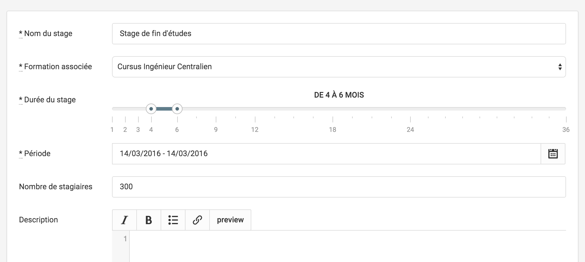

<!doctype html>
<html lang="en">

  <head>
    <meta charset="utf-8">

    <title>Form Objects</title>

    <meta name="apple-mobile-web-app-capable" content="yes" />
    <meta name="apple-mobile-web-app-status-bar-style" content="black-translucent" />

    <meta name="viewport" content="width=device-width, initial-scale=1.0, maximum-scale=1.0, user-scalable=no">

    <link rel="stylesheet" href="lib/reveal.js/css/reveal.min.css">
    <link rel="stylesheet" href="lib/reveal.js/css/theme/night.css">
    <link rel="stylesheet" href="lib/template.css">

    <!-- For syntax highlighting -->
    <link rel="stylesheet" href="lib/reveal.js/lib/css/zenburn.css">

    <!-- If the query includes 'print-pdf', include the PDF print sheet -->
    <script>
      if( window.location.search.match( /print-pdf/gi ) ) {
        var link = document.createElement( 'link' );
        link.rel = 'stylesheet';
        link.type = 'text/css';
        link.href = 'css/print/pdf.css';
        document.getElementsByTagName( 'head' )[0].appendChild( link );
      }
    </script>

    <!--[if lt IE 9]>
    <script src="lib/reveal.js/lib/js/html5shiv.js"></script>
    <![endif]-->
  </head>

  <body>
    <div class="reveal">
      <div class="slides" id="content">
        <section data-markdown
                 data-separator="==="
                 data-vertical="=="><script type="text/template">



==

### Name

* Mandatory, RAS

==

### Associated formation

* Selectable in the list of the school's formations

==

### Duration

* Range accessor on the model

* Default to 4-6 months if empty

==

### Period

* Date range accessor on the model

* Sent as YYYY-MM-DD strings

* Mandatory in the form only

==


==

**Where to put the logic ?**

===

# Form Objects

===

## Why

==

```markdown
  +--------------+                                                       +------------+
  |              |                                                       |            |
  | Frontend     |                                                       | Backend    |
  |              |        HTTP                                           |            |
  | * DOM        |        x-www-form-urlencoded                          | * Models   |
  | * JSON       | +---------------------------------------------------> | * Scopes   |
  | * Javascript | <---------------------------------------------------+ | * Objects  |
  |              |                                                       |            |
  +--------------+                                                       +------------+
```

==

* Parameters parsing

* Selects prepopulation

* Error messages

* Handle failed submits

==

```markdown
  +--------------+                                +-------------+         +------------+
  |              |                                |             |         |            |
  | Frontend     |                                | Form Object |         | Backend    |
  |              |                                |             |         |            |
  | * DOM        |                                |             |         | * Models   |
  | * JSON       | +----------------------------> |             | +-----> | * Scopes   |
  | * Javascript | <----------------------------+ |             | <-----+ | * Objects  |
  |              |                                |             |         |            |
  +--------------+                                +-------------+         +------------+
```

===

## What

==

### Business object

Handles **business validations**

Handles **user-specific** checks

==

### Presenter

Linked to a **specific form**

**Model-independant** representation

==

### Interface

Exposes a **high-level API**.

Implements HTML encoding and **HTTP decoding**.

===

## Result

==


==

```slim
= simple_form_for
    internship_form,
    url: [:directory, internship_form.school, internship_form.internship] do |f|

  = f.input :name
  = f.input :formation_id, collection: internship_form.available_formations
  = f.input :duration, as: :month_slider
  = f.input :period, as: :date_range_picker
  = f.input :headcount
  = f.input :description, as: :markdown

  = f.submit
```

==

```ruby
module Directory
  class InternshipsController < BaseController

    def edit
      internship = Internship.find(params[:id])
      @internship_form = InternshipForm.new(internship)
    end

    def update
      internship = Internship.find(params[:id])
      @internship_form = InternshipForm.new(internship, params[:internship])
      render :edit and return unless @internship_form.valid?

      internship.update_attributes!(@internship_form.attributes)
      redirect_with_success
    end

  end
end
```

==

<pre>
<code class="ruby">
pry> params
{
             "_method" => "patch",
              "action" => "update",
  "authenticity_token" => "PHD99W8rJI98ziW9oKa/f9kKJ+ExIb+BEHwiXXEAxB5RhvsZW+j3C8SfJfR3eVVMdny2Xvjx6y9raFsJYw14YQ=",
          "controller" => "directory/internships",
                  "id" => "19",
          "internship" => {
     "description" => "",
        "duration" => {
      "max" => "6",
      "min" => "4"
    },
    "formation_id" => "58",
       "headcount" => "300",
            "name" => "Stage de fin d'études",
          "period" => {
      "begin" => "2016-03-14",
        "end" => "2016-03-14"
    }
  },
           "school_id" => "14-centrale-paris",
                "utf8" => "✓"
}
</code>
</pre>

==

```ruby
pry> @internship_form.attributes
{
  :description => "",
     :duration => 4..6,
    :formation => #<Formation:0x007f98c81f94e8>,
    :headcount => 300,
         :name => "Stage de fin d'études",
       :period => Mon, 14 Mar 2016..Mon, 14 Mar 2016
}
```

===

## Jump to the code


==

```ruby
module Directory
  class InternshipForm < Form::ResourceForm

    resource :internship

    attribute :name, String
    attribute :formation, Formation
    attribute :duration, Range
    attribute :period, Range
    attribute :headcount, Integer
    attribute :description, String

    delegate :school, to: :internship

    validates :name, :formation_id, :period, :duration, presence: true

    def initialize_duration
      self.duration ||= (4..6)
    end

    def parse_duration(duration_params)
      return if duration_params.blank?
      self.duration = (duration_params[:min].to_i..duration_params[:max].to_i)
    end

    def parse_headcount(headcount)
      return if headcount.blank?
      self.headcount = headcount.to_i
    end

    def parse_period(period_params)
      return if period_params.blank?
      self.period = (Date.parse(period_params[:begin])..Date.parse(period_params[:end]))
    end

    def formation_id
      formation.try(:id)
    end

    def parse_formation_id(formation_id)
      self.formation = school.formations.where(id: formation_id).first
    end

    def available_formations
      school.formations
    end

  end
end
```

==

```ruby
module Form
  class ResourceForm

    include ActiveModel::Model
    include Virtus.model

    class_attribute :resource_name

    class << self

      # Configuration
      def resource(name)
        self.resource_name = name
        alias_method name, :resource # Reader
      end

      def model
        resource_name.constantize
      end

      def model_name
        ActiveModel::Name.new(self, nil, (resource_name || 'form').to_s)
      end

    end

    delegate :persisted?, to: :resource

    def initialize(resource = nil, params = {})
      resource ||= self.class.model.new
      @_resource = resource

      # Initialization
      attributes.keys.each do |key|
        if respond_to?(:"initialize_#{key}", true)
          send :"initialize_#{key}"
        else
          self.send(:"#{key}=", resource.send(key))
        end
      end

      # Population from params
      params.each do |key, value|
        if respond_to?(:"parse_#{key}", true)
          send(:"parse_#{key}", value)
        elsif attributes.keys.include? key.to_sym
          self.send(:"#{key}=", value)
        end
      end
    end

    def resource
      @_resource
    end

  end
end
```

        </script></section>

      </div>

    </div>

    <script src="lib/reveal.js/lib/js/head.min.js"></script>
    <script src="lib/reveal.js/js/reveal.min.js"></script>
    <script src="lib/jquery/dist/jquery.min.js"></script>
    <script src="config.js"></script>

  </body>
</html>
